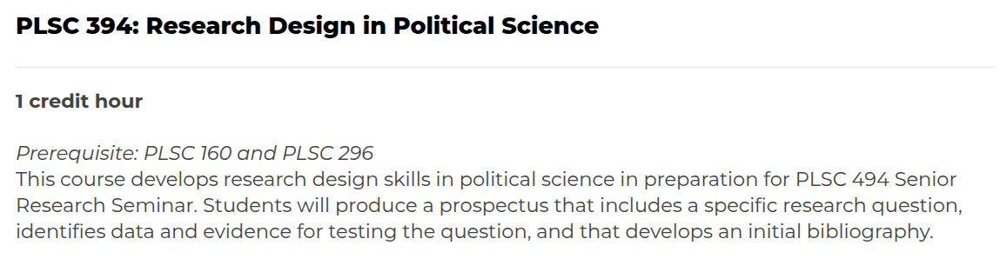

Practice Designing “Good” Research Questions
Justin Leinaweaver (Spring 2026)

The Prompt
What is your research question?
What brought you to this topic?
Why should we care about it?
A research question focuses your work, drives your progress and let’s you know when you’re done
A good question…
is interesting, important, controversial, brief, direct, doable and puzzling (Baglione 2019)
considers potential results, feasibility, scale and design (Huntington-Klein 2022)
A good question…
Your assignment:
A good question…
Your assignment:
Gathering the Literature for your Proposal
Find THREE political science research articles that aim to answer your RQ
Aim for three DIFFERENT answers!
Details on Canvas